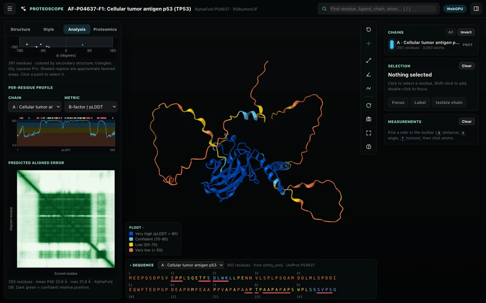
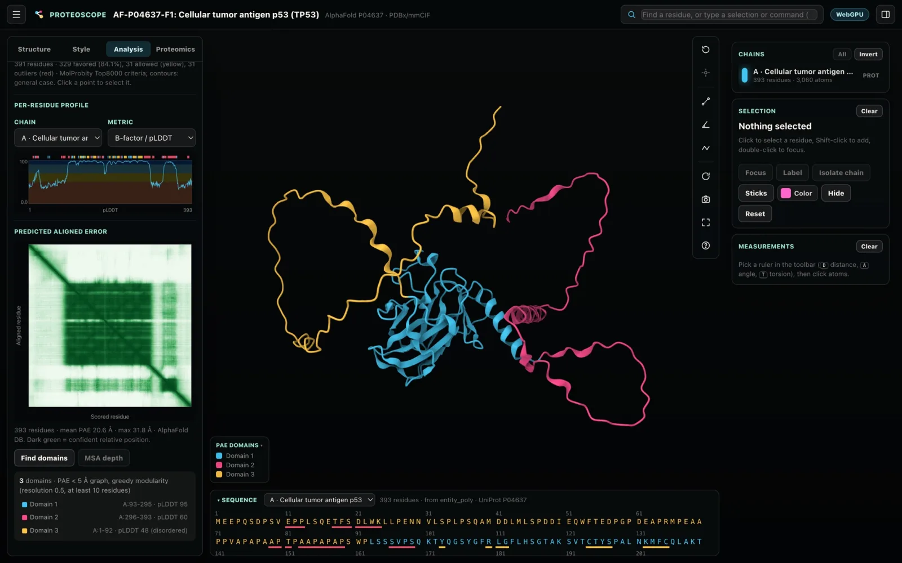

Predictions and AlphaFold
Open AlphaFold DB models and the output of structure predictors, rank the models of a run, and use pLDDT, the predicted aligned error and interface scores to decide which parts and which interactions to believe.
AlphaFold DB models
To open the AlphaFold DB model of a protein, type its UniProt accession (for example P04637) in Open structure, where you would type a PDB ID. The current AlphaFold DB model and its predicted aligned error (PAE) matrix are downloaded.
- Finding structures lists a protein's models from 3D-Beacons, AlphaFold DB first, next to its experimental structures.
- Compare with AlphaFold superposes the AlphaFold DB model on an experimental entry by UniProt numbering. See Comparing structures.
- The bundled example AF-P04637-F1 is the AlphaFold model of p53 with its PAE, so you can try pLDDT coloring and the PAE offline.

Confidence per residue (pLDDT)
The AlphaFold confidence (pLDDT) color scheme uses the AlphaFold DB colors. It is applied automatically to predicted models, and the ligands of AlphaFold 3, Boltz and Chai-1 models are colored per atom.
| pLDDT | Color |
|---|---|
| Above 90 | Dark blue |
| 70–90 | Light blue |
| 50–70 | Yellow |
| Below 50 | Orange |
- The selection card shows each residue's pLDDT, and the per-residue profile in the Analysis tab plots it along the sequence.
- Select low-confidence residues with a value such as
plddt < 70.
Proteoscope recognizes a predicted model from its ModelCIF records, the method and software names (AlphaFold, ColabFold, ESMFold, Boltz, Chai-1, OpenFold), or Protenix's data block name, and every model opened from a prediction folder is one. For these models the B-factor column is read as pLDDT, rescaled when a predictor writes it on a 0–1 scale. ModelCIF confidences on a 0–1 scale (SWISS-MODEL) are rescaled too.
Predicted aligned error
The Analysis tab shows the PAE heatmap for AlphaFold models and predictions. Drag a rectangle on the heatmap to select the residues of both ranges in 3D.
- Contact probability switches the heatmap to AlphaFold 3's contact probabilities.
- Find domains clusters the PAE into rigid domains. This follows ChimeraX's
alphafold pae colorDomains: residue pairs under 5 Å PAE are weighted by 1/PAE and grouped by greedy modularity. It lists each domain's residues and mean pLDDT, and the PAE domains color scheme colors by domain. - MSA depth colors each residue by the number of sequences aligned to it, on a log scale from red (1) to blue (≥ 1,000). It works for AlphaFold DB models, prediction folders, or a dropped
.a3m. Shallow alignments are the most common cause of low confidence. Select shallow regions with a value such asmsa < 30.

The PAE is also used by part-sphere exposure (pPSE): a neighbor counts only when its distance plus the PAE is within the radius. See Analysis.
Adding PAE and alignments to a model
You can also drop these files onto a loaded model:
- PAE: AlphaFold DB, AlphaFold 3 and ColabFold
.json, or Boltz.npz. - Alignments:
.a3m, aligned.fasta, Stockholm.stoor Clustal.aln. An alignment gives MSA depth and conservation.
Opening prediction output
Structure predictors write a folder of ranked models with their confidence data. Proteoscope reads the whole folder, ranks the models, and scores every interface, so you can decide which predicted interactions to believe without uploading anything. To open one:
- Drop the folder onto the window, or choose it with Open prediction folder….
- Drop the AlphaFold Server
.zip. - Name the folder on the command line:
$ proteoscope af3_output/my_job/Tip. Open the whole output folder, or the AlphaFold Server .zip, rather than a single model file, so the confidence files come along.
What is read from each tool
| Tool | Models | Confidence |
|---|---|---|
| AlphaFold 3 | seed-*_sample-*/…model.cif | summary_confidences.json (ranking score, pTM, ipTM, chain-pair ipTM), confidences.json (PAE, contact probabilities, per-atom pLDDT), MSAs from …_data.json |
| AlphaFold Server | fold_*_model_N.cif in the downloaded .zip | summary_confidences_N.json, full_data_N.json |
| Boltz-1 / Boltz-2 | …_model_N.cif | confidence_…json, pae_…npz (written with --write_full_pae), plddt_…npz, Boltz-2 affinity_…json, MSAs from msa/ |
| Chai-1 | pred.model_idx_N.cif | scores.model_idx_N.npz (aggregate score, pTM, ipTM, chain-pair ipTM, clashes) |
| ColabFold | …_relaxed_rank_…pdb (else unrelaxed) | …_scores_rank_…json (pLDDT, PAE, pTM, ipTM), .a3m |
| Protenix | seed_*/predictions/…_sample_N.cif | …_summary_confidence_sample_N.json (ranking score, pTM, ipTM, chain-pair ipTM), …_full_data_sample_N.json (PAE and contact probabilities, written with --need_atom_confidence) |
| OpenFold3 | …_seed_S_sample_N_model.cif or .pdb | …_confidences_aggregated.json (sample ranking score, pTM, ipTM, chain-pair ipTM), …_confidences.json or .npz (PAE) |
- AlphaFold 3 runs saved with
--compress_large_output_files(.zstmodels and confidences) open as they are. - Samples from several seeds form one ranked set.
- Other files in a prediction folder (logs, settings, templates, inputs) are left alone.
- Chai-1 does not write PAE to disk, so its models get the scores Chai reports but not the PAE-based ones.
Ranking models
The Prediction group in the Structure tab lists the models by the tool's own ranking score.
- Click a model to show it in place of the current one.
- Superpose all models opens them all, superposed on the top-ranked model, so you can see where they disagree.
- Export CSV saves every model and chain pair with the interface scores.
- The
rankingcommand lists them from the command line.

Interface scores
For each chain pair, Proteoscope computes interface scores from the model's PAE, pLDDT and coordinates, with the definitions of Dunbrack's ipsae.py.
| Score | What it is |
|---|---|
| ipTM | As the predictor reports it; for ColabFold, recomputed from the PAE. |
| ipSAE (Dunbrack 2025) | pTM-style scores averaged only over residue pairs whose PAE is below 10 Å (15 Å for AlphaFold 2 / ColabFold), so disordered tails and extra domains do not drag the score down the way they do ipTM. |
| pDockQ (Bryant et al. 2022) | From the interface pLDDT and the number of Cβ contacts within 8 Å. |
| pDockQ2 (Zhu et al. 2023) | From the interface pLDDT, the number of Cβ contacts within 8 Å, and the PAE of the contacting pairs. |
| LIS (Kim et al. 2024) | The mean of (12 − PAE)/12 over inter-chain pairs with PAE below 12 Å. |
The matrix under the score table shows ipTM for every chain pair, with chain pTM on the diagonal. Switch it to ipSAE or pDockQ2, and click a cell to select that interface.
Checked against ipsae.py
These scores reproduce ipsae.py (version 4) to its printed precision on the AlphaFold 3 (Aurora A–TPX2) and AlphaFold 2 multimer (RAF1–KSR1–MEK1) examples of the IPSAE repository, and on a Boltz-2 prediction. A unit test pins them to ipsae.py output at both PAE cutoffs. The example outputs in that repository predate version 4 and count PAE = 12 Å in LIS, so their LIS differs in the fourth decimal.
More confidence data
- Contact probability (AlphaFold 3) sits next to the PAE in the Analysis tab.
- Find domains clusters the PAE into rigid domains as ChimeraX does; see Predicted aligned error.
- MSA depth colors each residue by how many sequences were aligned to it. Shallow alignments are the most common cause of low confidence.
- Cross-links mapped in the Proteomics tab add a column with how many links each model satisfies. See Proteomics.
Predictions in sessions
Sessions keep the model, its PAE, contact probabilities and scores:
- PAE matrices and contact probabilities you opened are saved (at 0.125 Å and 1/255 steps), with the prediction scores and MSA depth.
- PAE domains are recomputed when the session opens, and AlphaFold DB PAE matrices are fetched again.
See Sessions, figures and methods. The related commands are alphafold, ranking, domains and msa; the help dialog (?) lists the syntax of each.